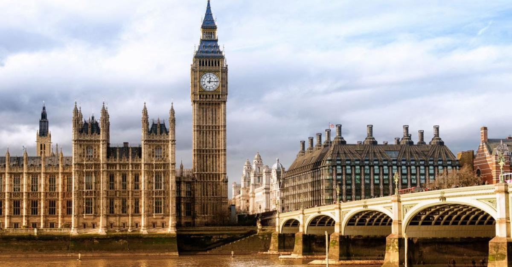
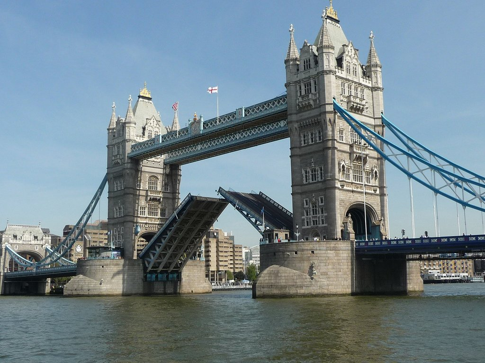

London is the capital city of England and of the United Kingdom of Great Britain and Northern Ireland. Today it is one of the world's most important financial and business centres and one of the largest cities in the world. London is situated on the river Thames, which is suitable for navigation all the year round. London is a cosmopolitan city. People of different races and nationalities, cultures and religions live there. It is quite natural that over 300 different languages are spoken here. London itself and its suburbs make up Greater London and its population is about 11 million people. Greater London territory covers an area of 1865 square kilometres and is twice as big as the territory of New York though its population is almost twice smaller. The size of the city impresses even those people who were informed that the city is really big. A great number of places of interest attract attention of tourists from all over the world. London is an international transport point with five international airports (Heathrow is the main one) and a large port. Residents of London are reffered to as Londoners.
London is an ancient city. It was founded more than twenty centuries ago. When the Romans began invading the country it was a small village.
The Romans built London, which they called Londinium. It was a large and rich city with clean streets, beautiful palaces, shops and villas.

The word "Londinium" [lən'di:niəm] is probably of Celtic origin meaning "lake fortress". You may be surprised why a lake fortress, because you know that London stands on a river but not on a lake. It is true but during the tide in the sea the waters of the river Thames covered almost the whole territory where the town was standing on a great lake except for a high hill which was not covered with water and was chosen as a place where the first fortress was built. It was first made of earth and then of stone. The line, where the walls of this fortress were became the boundary of the City of London.
Nowadays, when the Queen makes ceremonial visits to the City, she stops at Temple Bar Memorial (it used to be the Temple Bar Gates that showed the boundary of the City at Westminster side) to receive the right of entry from the Lord Mayor. This memorial is crowned with the Griffins that guard the City of London.
In the 5th century the Romans left Britain, but other invaders came to the British shores. They almost ruined the city and it remained in this poor state for almost 400 years. Only in the 9th century the Saxon kings began to rebuild the city. They started building of Westminster Abbey.
In the 17th century London suffered two awful tragedies, the Great Plague in 1665 and the Great Fire in 1666.

The Great Fire happened through carelessness of a young baker who left a small bundle of wood near a very hot oven. In medieval City of London the buildings were wooden. The houses were burning like paper. In a few hours this fire destroyed 3,000 houses and at least 97 churches. Fortunately, the wind soon stopped and then heavy rain fell. Thus. London was saved.
In order to commemorate this terrible catastrophy the Londoners erected a monument. It is now called simply the Monument.
The Monuments height (61.5 metres) is equal to the distance between the Monument and the bakery at Pudding Lane where the fire began.